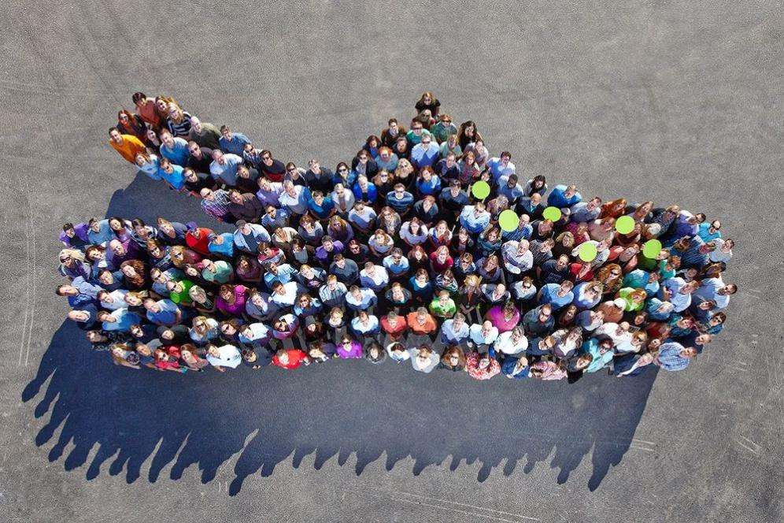

Crocs a décidé de voir plus grand, de repousser les limites et de devenir les premiers innovateurs d’une nouvelle façon de se déplacer. Finis les bateaux et autres objets poluants notre planète et place à l’Aquawalks !
Le Prototype
La dynamique de poussée est rendue possible grâce à un système de pressurisation de l’air ambiant directement intégré à la semelle. Entièrement conçu en aqua-submoveo, celui-ci bénéficie d’un poids très léger : 700g pour un poids total de 1,2kg
Le revêtement de la semelle est conçu à partir d’un matériau superhydrophobe : l’aqua-submoveo. De nombreuses membranes coniques dont l’angle de pénétration dans l’eau empêche la semelle de se mouiller. Cette technologie bio-mimétique est inspirée du gerris.
Actualité
Notre Histoire

Les crocs ont été inventées par Marie-Claude de Billy et Andrew Reddyhoff, ce sont tous deux des Québécois, pratiquant le métier d’ingénieurs, en chimie. L’entreprise Américaine Crocs s’est créée en 2002, fabrique des chaussures. La matière de ces chaussures Crocs est faite en plastique, qui est une mousse d'éthylène-acétate de vinyle. C’est alors en 2003, qu’ils décident de vendre leur création à des Américains, qu’ils avaient rencontrés dans le Colorado lors d’une foire commerciale. Le siège social de Crocs se situera par la suite dans le Colorado. Cependant, en 2013, ils connaissent une mauvaise période financière. C’est alors que BlackStone tente de racheter Crocs, pour les sortir de cette mauvaise passe. Après cela, les crocs ont connu un grand succès. Et sont désormais portées pour toute activité quotidienne, qu’à l’origine elles ont été conçus pour qu’on puisse les portées à la plage, mais aussi lorsque que nous nous trouvons sur un bateau.